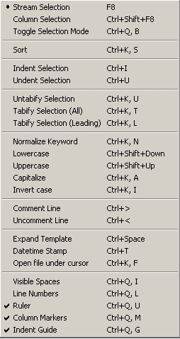

| Text Menu | Previous Top Next |
|  |
Stream Selection : toggle stream selection mode.
Column Selection : toggle columnar selection mode.
Toggle Selection Mode : toggle selection mode.
Sort : sort selected text or whole file.
Indent Selection : indent selected
text.
Undent Selection : undent selected
text.
Untabify Selection : replace tabs with spaces in selected
text.
Tabify Selection (All) : replace all spaces with tabs in the
selection.
Tabify Selection
(Leading) : replace leading spaces with tabs in the
selection.
Normalize Keyword : normalize current word or selected
text.
Lowercase : lowercase current word or selected
text.
Uppercase : uppercase current word or selected text.
Capitalize : capitalize current word or selected
text.
Invert case : invert case of current word or selected text.
Comment Line : comment selected lines.
Uncomment Line : uncomment selected lines.
Expand Template : expand
templates.
DateTime Stamp : put current date at current position.
Open file under cursor : open the indicated file
in a new tab.
Visible Spaces : show/hide space and tab characters.
Line Numbers : show/hide lines
number.
Ruler : show/hide ruler.
Column Markers : show/hide Column Marker.
Indent Guide : show the indent guide.
|